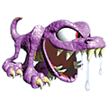
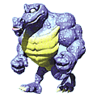
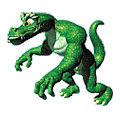

平和でのんびりした楽園 ドンキーコングランドが 近頃てんやわんやの大騒ぎ！ 「かつて何世紀にもわたって 近隣諸国を支配していたという 伝説のロストワールドを探せ！」 という噂を聞きつけ世界中から 強者たちが集まってきたのです。 冒険好きのドンキーとディディーも この大競争に出かけて行きました。 もちろん！ディクシーもおとなしく 留守番なんてしていられません！ 「さぁ、行くわよディンキー！ 私たちがロストワールドを １番に見つけるのよ！」 ディクシーと赤ちゃんコングの ディンキーは一緒にジャングルの 奥深くに入って行きました。 |
 |
|
|  |  | |
|  |